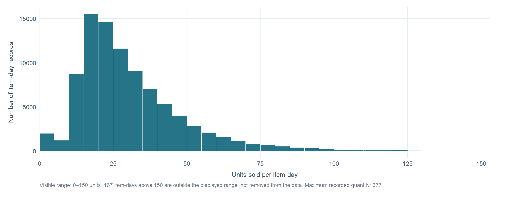
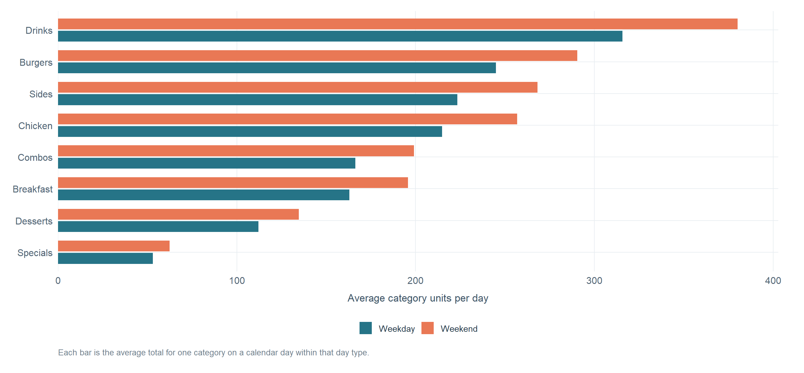
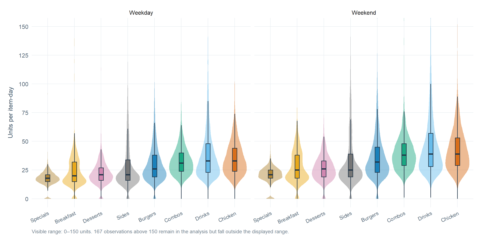
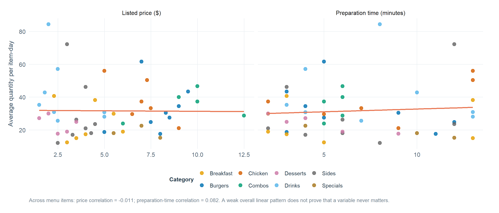

Know the data, understand demand, then choose the chart
Exploration has an order. First I learn what a row represents, then I establish how quantity behaves on its own, compare it across useful groups, and only then choose graphs. In this dataset, quantity is units of one menu item recorded on one date. Adding items together by date gives a different outcome: total restaurant demand per day. I keep those measures separate so the comparisons stay clear.
The exploration below uses the selected restaurant R07 in Minneapolis and the eight source tables needed for this project. The R code for each step is available in a Show R code dropdown.
Note
If this page says source files are missing, copy the eight CSV files listed on the Data page into the project’s data/ folder. This page does not create sample or replacement data.
Step 1: know what the data describe
Before deciding on a chart, I need to understand the sales table’s structure and what the supporting tables add. The sales table describes item-days; the menu table supplies item names, categories, and listed prices; the calendar adds weekday and month; and the remaining tables support the later questions about cost, weather, events, and marketing.
Show R code
if (data_ready) {# Join the two tables needed for item-level exploration, then keep a clean# version for summaries while preserving sales with missing quantities. sales_menu_all <- sales |>left_join( menu_items |>select(menu_item_id, menu_item_name, category, unit_price),by ="menu_item_id" ) item_day_data <- sales_menu_all |>filter(!is.na(quantity))glimpse(sales) inventory <-qsr_data_inventory(qsr_data) |>transmute(`Source table`= table,Rows = scales::comma(rows),Columns = columns,`Missing cells`= scales::comma(missing_cells) ) missing_quantity_count <-sum(is.na(sales$quantity)) duplicate_item_days <- sales |>count(date, menu_item_id) |>filter(n >1) |>nrow() missing_menu_names <-sum(is.na(sales_menu_all$menu_item_name)) quality_checks <-tibble(Check =c("Missing quantity values","Duplicate date + menu-item combinations","Menu names missing after joining" ),Result =c(paste0(scales::comma(missing_quantity_count), " (", scales::number(100* missing_quantity_count /nrow(sales), accuracy =0.1), "%)"), scales::comma(duplicate_item_days), scales::comma(missing_menu_names) ) )print(knitr::kable( inventory,caption ="The eight source tables available to the analysis",align =c("l", "r", "r", "r") ))print(knitr::kable( quality_checks,caption ="Data checks that affect item-day comparisons",align =c("l", "r") ))} else {cat("Missing source files in data/: ", paste(missing_inputs, collapse =", "))}
The important distinction is the unit of observation. One sales row is one menu item on one date, not one customer transaction. That lets me study daily demand for each item, but it does not show which products an individual customer bought together.
Step 2: understand the outcome on its own
I start with a baseline before comparing categories or promotions. The table below summarizes both item-day quantity and total daily restaurant demand. The numbers are on different scales, so I label each outcome rather than treating them as interchangeable.
Show R code
if (data_ready) {# Daily totals retain the date and sum only the quantities that were recorded. daily_demand <- sales |>group_by(date) |>summarise(daily_units =if (all(is.na(quantity))) NA_real_elsesum(quantity, na.rm =TRUE),.groups ="drop" ) |>left_join( calendar |>select(date, day_of_week, day_of_week_num, is_weekend, month, year),by ="date" ) item_day_baseline <- item_day_data |>summarise(Outcome ="Quantity per item-day",Observations =n(),Mean =mean(quantity),Median =median(quantity),`90th percentile`=quantile(quantity, 0.90, names =FALSE),Maximum =max(quantity),.groups ="drop" ) daily_baseline <- daily_demand |>summarise(Outcome ="Total units per restaurant-day",Observations =sum(!is.na(daily_units)),Mean =mean(daily_units, na.rm =TRUE),Median =median(daily_units, na.rm =TRUE),`90th percentile`=quantile(daily_units, 0.90, na.rm =TRUE, names =FALSE),Maximum =max(daily_units, na.rm =TRUE),.groups ="drop" ) baseline_table <-bind_rows(item_day_baseline, daily_baseline) |>mutate(Observations = scales::comma(Observations),across(c(Mean, Median, `90th percentile`, Maximum), ~ scales::number(.x, accuracy =0.1)) ) knitr::kable( baseline_table,caption ="Baseline summaries before comparing groups",align =c("l", "r", "r", "r", "r", "r") )} else {cat("Baseline summaries will appear after the eight source CSV files are copied to data/.")}
Baseline summaries before comparing groups
Outcome
Observations
Mean
Median
90th percentile
Maximum
Quantity per item-day
90,935
31.7
27.0
55.0
677.0
Total units per restaurant-day
1,826
1 577.6
1 513.5
2 127.5
3 811.0
For item-level comparisons, rows with missing quantities stay missing instead of being silently converted to zero. Daily totals use the observed quantities on each date, so a date with a missing item quantity can be slightly understated.
What does one item’s daily quantity look like?
One numeric outcome, examined on its own: a histogram. I use the histogram to see the typical range and whether a small number of high-volume item-days stretch the distribution. The view focuses on 0–150 units so the common range remains readable; the caption states how many observations fall outside that visible window.
Show R code
if (data_ready) { item_days_above_view <-sum(item_day_data$quantity >150, na.rm =TRUE) max_item_day_quantity <-max(item_day_data$quantity, na.rm =TRUE) p_quantity_distribution <-ggplot(item_day_data, aes(x = quantity)) +geom_histogram(binwidth =5, boundary =0, fill = qsr_teal, color ="white", linewidth =0.25) +scale_x_continuous(breaks =seq(0, 150, by =25),labels = scales::label_comma(),expand =expansion(mult =c(0, 0.02)) ) +coord_cartesian(xlim =c(0, 150)) +labs(x ="Units sold per item-day",y ="Number of item-day records",caption =paste0("Visible range: 0–150 units. ", scales::comma(item_days_above_view)," item-days above 150 are outside the displayed range, not removed from the data. ","Maximum recorded quantity: ", scales::comma(max_item_day_quantity), "." ) ) + theme_businessshow_chart(p_quantity_distribution)} else {cat("The histogram will render after the required CSV files are available.")}

What this tells me: The histogram shows how common quantities are distributed before I compare groups. A long right tail means the average can be pulled upward by a small number of large item-days, so medians and distributions can be helpful alongside means.
Step 3: compare the same outcome across groups
A group_by() lets me reuse the same outcome summary for each menu category. Total units show the contribution to overall volume; mean and median quantity describe a typical item-day. These answer related but different questions.
Show R code
if (data_ready) { category_summary <- item_day_data |>group_by(category) |>summarise(`Total recorded units`=sum(quantity, na.rm =TRUE),`Mean units per item-day`=mean(quantity, na.rm =TRUE),`Median units per item-day`=median(quantity, na.rm =TRUE),`Menu items`=n_distinct(menu_item_id),`Item-day records`=n(),.groups ="drop" ) |>arrange(desc(`Total recorded units`)) |>mutate(`Total recorded units`= scales::comma(`Total recorded units`),`Mean units per item-day`= scales::number(`Mean units per item-day`, accuracy =0.1),`Median units per item-day`= scales::number(`Median units per item-day`, accuracy =0.1),`Item-day records`= scales::comma(`Item-day records`) ) knitr::kable( category_summary,caption ="The menu category summary: volume and typical item-day quantity",align =c("l", "r", "r", "r", "r") )} else {cat("The category summary will appear after the required CSV files are available.")}
The menu category summary: volume and typical item-day quantity
category
Total recorded units
Mean units per item-day
Median units per item-day
Menu items
Item-day records
Drinks
610,253
41.9
34.0
8
14,554
Burgers
470,970
32.4
28.0
8
14,548
Sides
431,224
29.6
22.0
8
14,560
Chicken
414,210
38.0
35.0
6
10,902
Combos
320,896
35.3
33.0
5
9,081
Breakfast
314,825
24.7
22.0
7
12,742
Desserts
216,535
23.8
22.0
5
9,089
Specials
101,830
18.7
19.0
3
5,459
The highest total does not automatically mean the highest margin; that is a separate question for the report’s menu-economics section.
What do the promotion groups look like before plotting them?
I also calculate the number of recorded item-days in each promotion group. That matters because group sizes are very different, and a visual difference can be misleading if one group is much smaller than the other.
Show R code
if (data_ready) { promotion_summary <- item_day_data |>mutate(promotion_status =if_else(is_promotion ==1, "Promotion", "No promotion")) |>group_by(promotion_status) |>summarise(`Item-day records`=n(),`Share of records`=100*n() /nrow(item_day_data),`Mean quantity`=mean(quantity),`Median quantity`=median(quantity),.groups ="drop" ) |>mutate(`Item-day records`= scales::comma(`Item-day records`),`Share of records`=paste0(scales::number(`Share of records`, accuracy =0.1), "%"),`Mean quantity`= scales::number(`Mean quantity`, accuracy =0.1),`Median quantity`= scales::number(`Median quantity`, accuracy =0.1) ) knitr::kable( promotion_summary,caption ="Promotion-group baseline, including sample size",align =c("l", "r", "r", "r", "r") )} else {cat("The promotion summary will appear after the required CSV files are available.")}
Promotion-group baseline, including sample size
promotion_status
Item-day records
Share of records
Mean quantity
Median quantity
No promotion
89,970
98.9%
31.6
27.0
Promotion
965
1.1%
39.1
34.0
Step 4: add calendar context when it helps answer the question
The raw sales file does not directly say whether an item-day belongs to a weekday, a weekend, or a season. I add those labels from the calendar table with mutate() and case_when(). Then I summarize category units per date. This is important because comparing raw weekday totals with raw weekend totals would be unfair: a typical week contains five weekdays but only two weekend days.
Example item-day records with the derived calendar labels
date
day_of_week
day_type
season
menu_item_name
category
quantity
2021-01-01
Friday
Weekday
Winter
Apple Pie Slice
Desserts
16
2021-01-01
Friday
Weekday
Winter
BBQ Ranch Burger
Burgers
37
2021-01-01
Friday
Weekday
Winter
Bottled Water
Drinks
32
2021-01-01
Friday
Weekday
Winter
Breakfast Burrito
Breakfast
23
2021-01-01
Friday
Weekday
Winter
Breakfast Sandwich Egg & Cheese
Breakfast
43
2021-01-01
Friday
Weekday
Winter
Brownie
Desserts
15
2021-01-01
Friday
Weekday
Winter
Buffalo Chicken Tenders
Chicken
25
2021-01-01
Friday
Weekday
Winter
Chicken Caesar Salad
Chicken
24
Step 5: choose the chart based on the question
A chart is chosen for the job it needs to do. A histogram shows one numeric distribution; grouped bars compare category-level quantities; boxplots and violins reveal how distributions differ; and scatterplots with smoothing lines help check relationships between two numeric variables. These chart types and the use of multiple geoms and facets match the visualization logic covered in Weeks 4–5.
Average daily category demand is useful for comparing weekdays and weekends
Grouped horizontal bars compare categories using the same unit: average category units per calendar day. Averaging by day type makes weekday-versus-weekend comparisons fairer than comparing the raw totals across groups of different sizes.
Show R code
if (data_ready) { p_category_daytype <-ggplot( category_day_summary |>mutate(category = forcats::fct_reorder(category, average_daily_category_units)),aes(x = average_daily_category_units, y = category, fill = day_type) ) +geom_col(position =position_dodge(width =0.78), width =0.68) +scale_fill_manual(values =c("Weekday"= qsr_teal, "Weekend"= qsr_coral), name =NULL) +scale_x_continuous(labels = scales::label_comma(), expand =expansion(mult =c(0, 0.06))) +labs(x ="Average category units per day",y =NULL,caption ="Each bar is the average total for one category on a calendar day within that day type." ) + theme_business +theme(legend.position ="bottom")show_chart(p_category_daytype)} else {cat("The category-by-day-type chart will appear after the required CSV files are available.")}

What this adds: The chart shows which categories have higher average daily volume on weekdays or weekends. It is a planning clue, not a prediction for any single date.
Category distributions differ, so averages are not the whole story
Violin plots plus boxplots compare numeric quantity across categories, split into weekday and weekend panels. The violin shows where observations concentrate; the boxplot shows the median and middle half of the values. The visible y-range is limited to 0–150 units to make typical observations readable. High values remain in the underlying data and are counted in the caption.
Show R code
if (data_ready) { item_days_above_view <-sum(item_day_context$quantity >150, na.rm =TRUE) p_category_distribution <-ggplot( item_day_context,aes(x = forcats::fct_reorder(category, quantity, .fun = median, na.rm =TRUE),y = quantity, fill = category) ) +geom_violin(trim =TRUE, scale ="width", alpha =0.42, color =NA) +geom_boxplot(width =0.17, alpha =0.82, outlier.shape =NA, color ="#203447") +facet_wrap(~day_type, nrow =1) +scale_fill_manual(values = category_colors, guide ="none") +scale_y_continuous(breaks =seq(0, 150, by =25), labels = scales::label_comma()) +coord_cartesian(ylim =c(0, 150)) +labs(x =NULL,y ="Units per item-day",caption =paste0("Visible range: 0–150 units. ", scales::comma(item_days_above_view)," observations above 150 remain in the analysis but fall outside the displayed range." ) ) + theme_business +theme(axis.text.x =element_text(angle =25, hjust =1, size =11), legend.position ="none")show_chart(p_category_distribution)} else {cat("The category distribution chart will appear after the required CSV files are available.")}

What this adds: A category may have high total volume because it contains several popular items, while its typical item-day quantity may still be modest. The distribution view helps distinguish a typical day from the unusually high tail.
Listed price and preparation time do not show a clear overall linear pattern
Two numeric characteristics versus average item-day quantity: scatterplots with linear smoothing lines, split into facets. Each point represents one menu item. The trend lines check for a simple overall association; they do not demonstrate cause and effect.
Show R code
if (data_ready) { relationship_data <- item_summary |>select(menu_item_name, category, average_item_day_quantity, unit_price, prep_minutes) |>pivot_longer(cols =c(unit_price, prep_minutes),names_to ="measure",values_to ="x_value" ) |>mutate(measure =recode( measure,unit_price ="Listed price ($)",prep_minutes ="Preparation time (minutes)" ) ) |>filter(!is.na(x_value), !is.na(average_item_day_quantity)) p_item_relationships <-ggplot( relationship_data,aes(x = x_value, y = average_item_day_quantity, color = category) ) +geom_point(size =3, alpha =0.82) +geom_smooth(aes(group =1),method ="lm",formula = y ~ x,se =FALSE,color = qsr_coral,linewidth =1.1 ) +facet_wrap(~measure, scales ="free_x", nrow =1) +scale_color_manual(values = category_colors, name ="Category") +scale_y_continuous(labels = scales::label_number(accuracy =1)) +labs(x =NULL,y ="Average quantity per item-day",caption =paste0("Across menu items: price correlation = ", round(price_demand_correlation, 3),"; preparation-time correlation = ", round(prep_demand_correlation, 3),". A weak overall linear pattern does not prove that a variable never matters." ) ) + theme_business +theme(legend.position ="bottom")show_chart(p_item_relationships)} else {cat("The relationship charts will appear after the required CSV files are available.")}

What this adds: In this dataset, the overall correlations between listed price or preparation time and average item-day demand are weak. The plots make that lack of a clear linear pattern visible instead of turning every available variable into a headline finding. Category, promotions, and timing may matter in other ways, so these are screening checks rather than final answers.
What the exploration gives us
The data structure clarifies that quantity is recorded per item-day, while restaurant demand is a daily total.
A small number of large observations can affect averages, so I use distribution views and report the visible range when zooming in.
Category totals and typical item-day quantities answer different questions; both help explain the menu mix.
Day-type comparisons use averages per date rather than raw sums from groups with different numbers of days.
Price and preparation time were checked with scatterplots and smoothing lines, but neither shows a strong overall linear relationship with average item-day quantity in the selected data.
The full report follows these exploratory checks with the deeper business story: which items drive volume, when demand changes, how top products move together, how promotion distributions differ, how volume compares with estimated food-cost margin, and what weather and local events add to the picture.